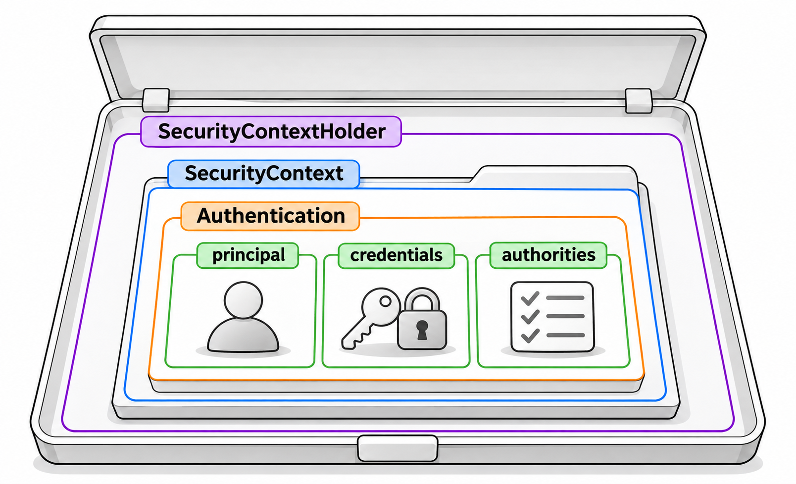
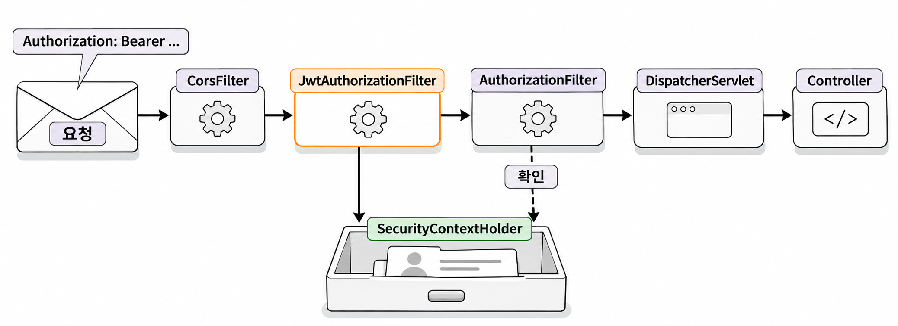
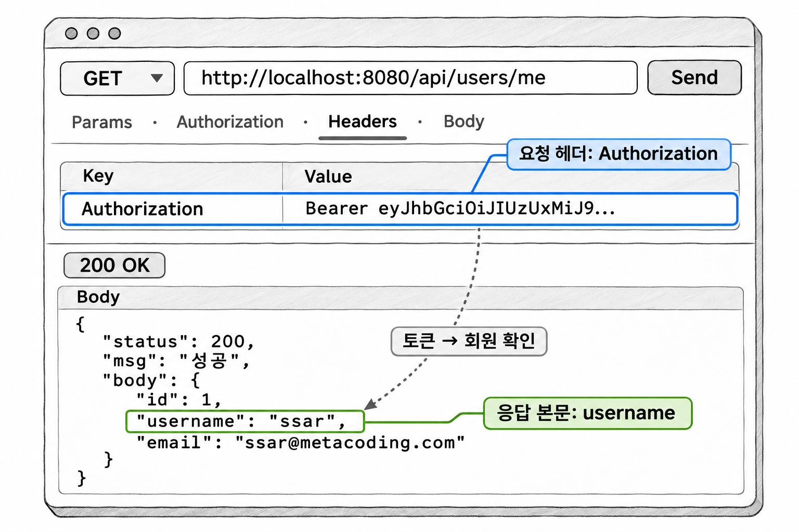
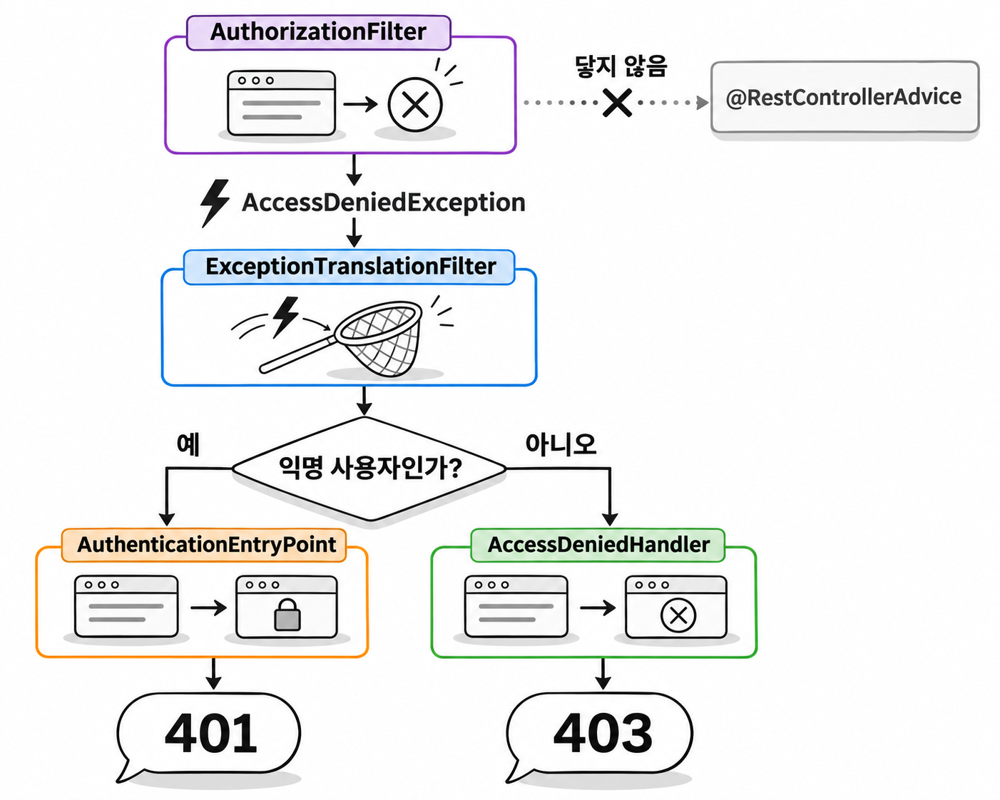
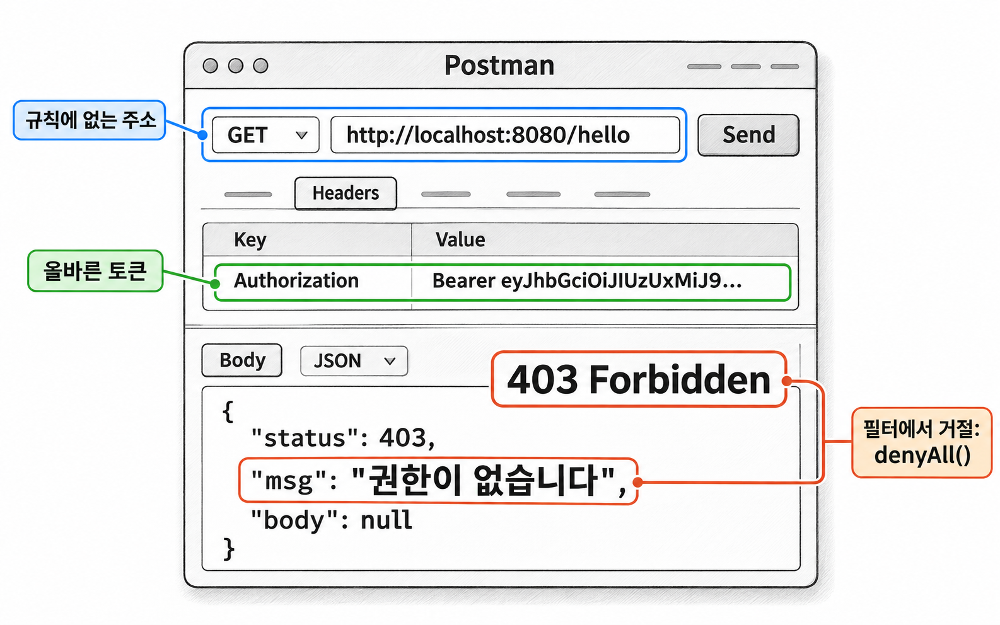

14장. 인증 필터란?
12장에서는 로그인에 성공하면 서버가 JWT를 만들어 Authorization 응답 헤더에 담아 주게 했습니다. 하지만 서버는 아직 그다음 요청에 실려 오는 토큰을 읽지 않습니다. 이 장에서는 인증 필터(authentication filter)를 만듭니다. 인증 필터는 요청마다 토큰을 검사해 누가 보낸 요청인지 스프링 시큐리티에 알려 줍니다. 이어서 주소마다 로그인이 필요한지 정하고, 요청을 거절할 때도 Resp 모양으로 응답하게 합니다.
1. JWT 검증
1.1 JwtUtil.verify
JWT 검증은 클라이언트가 보낸 토큰을 이 서버가 만든 것이 맞는지, 아직 쓸 수 있는지 확인하는 일입니다. 12장에서 본 것처럼 JWT의 서명은 헤더와 페이로드를 서버의 비밀키로 계산한 값입니다. 검증할 때는 받은 헤더와 페이로드로 서명을 다시 계산하고, 토큰에 붙어 온 서명과 비교합니다. 페이로드를 한 글자라도 고쳤다면 두 서명이 달라집니다. 서명이 맞아도 만료 시각(exp)이 지났으면 검증에 실패합니다.
java-jwt에서는 검증기를 만든 뒤 verify()에 토큰 문자열을 넘깁니다.
기본 문법
DecodedJWT decoded = JWT.require(알고리즘).build().verify(토큰문자열);JWT.require()에는 토큰을 만들 때 쓴 것과 같은 알고리즘과 키를 넘깁니다. 검증에 성공하면 DecodedJWT가 돌아오고, 여기서 클레임을 꺼냅니다. 실패하면 예외가 발생하는데, 실패 원인마다 예외 클래스가 다릅니다.
| 예외 | 발생하는 경우 |
|---|---|
TokenExpiredException | 만료 시각이 지난 토큰 |
SignatureVerificationException | 서명이 맞지 않는 토큰(내용을 고쳤거나 다른 키로 만든 토큰) |
AlgorithmMismatchException | 헤더의 알고리즘이 검증기와 다른 토큰 |
JWTDecodeException | JWT 형식이 아닌 문자열 |
네 예외는 모두 JWTVerificationException을 상속합니다. 원인을 나눠 처리할 필요가 없으면 JWTVerificationException 하나로 잡습니다.
검증에 쓸 알고리즘은 서버가 정해서 넘깁니다. 토큰 헤더의 alg는 토큰을 가진 사람이 마음대로 고칠 수 있는 값이기 때문입니다. 누군가 헤더를 "alg":"none"(서명 없음)으로 바꾼 토큰을 보내도 검증기는 헤더의 값을 따르지 않습니다. 검증기는 JWT.require()에 넘긴 HMAC512만 받아들이므로, 헤더의 알고리즘이 다르면 AlgorithmMismatchException을 던져 거절합니다.
12장에서 JwtUtil은 @Component 빈으로 만들었고, 비밀키와 만료 시간은 생성자에서 @Value로 받았습니다. 검증 메서드도 같은 algorithm 필드를 씁니다.
예제 14-1 — 토큰 검증 메서드 만들기
이어서: 예제 13-2
파일명: src/main/java/com/newtenco/blog/core/util/JwtUtil.java
package com.newtenco.blog.core.util;
import com.auth0.jwt.JWT;
import com.auth0.jwt.algorithms.Algorithm;
import com.auth0.jwt.interfaces.DecodedJWT;
import com.newtenco.blog.user.User;
import org.springframework.beans.factory.annotation.Value;
import org.springframework.stereotype.Component;
import java.util.Date;
// JWT를 만드는 일(create)과 검사하는 일(verify)을 한곳에 모은 클래스
// 두 일은 반드시 같은 비밀 키를 써야 하므로 한 클래스에 둔다
// @Component: 스프링이 객체를 하나만 만들어 빈으로 등록한다. 필요한 곳은 생성자로 주입받는다
@Component
public class JwtUtil {
// 토큰을 담는 HTTP 헤더 이름. 요청 · 응답 모두 이 이름을 쓴다
public static final String HEADER = "Authorization";
// 토큰 앞에 붙이는 말. "Bearer" 뒤의 공백 한 칸까지가 접두사다
// 두 값은 HTTP 규칙으로 정해진 이름이라 환경마다 바뀌지 않으므로 설정 파일이 아닌 상수로 둔다
public static final String TOKEN_PREFIX = "Bearer ";
// 서명 도구(HS512 알고리즘 + 비밀 키). 생성자에서 한 번 만들어 두고 계속 쓴다
private final Algorithm algorithm;
// 토큰 유효 시간(밀리초). 86400000이면 24시간
private final long expirationTime;
// @Value: application.properties 같은 설정 파일의 값을 매개변수로 받는다
// 비밀 키를 코드에 직접 적지 않아야 키가 소스 코드와 함께 저장소에 남지 않는다
public JwtUtil(@Value("${app.jwt.secret}") String secret,
@Value("${app.jwt.expiration-time}") long expirationTime) {
// HMAC512: 비밀 키 하나로 서명을 만들고, 검사할 때도 같은 키를 쓰는 방식
this.algorithm = Algorithm.HMAC512(secret);
this.expirationTime = expirationTime;
}
// 로그인에 성공한 회원의 토큰을 만든다
// 토큰 내용(페이로드)은 누구나 디코딩해 읽을 수 있으므로 비밀번호 · 이메일은 넣지 않는다
public String create(User user) {
String jwt = JWT.create()
// sub(subject) 칸: 토큰의 주인. 유저네임을 넣는다
.withSubject(user.getUsername())
// exp 칸: 만료 시각. 지금 시각에 유효 시간을 더한 때다
.withExpiresAt(new Date(System.currentTimeMillis() + expirationTime))
// 직접 이름을 정한 칸. 필터가 요청을 보낸 회원을 알아낼 때 쓴다
.withClaim("id", user.getId())
.withClaim("username", user.getUsername())
// 헤더와 페이로드를 비밀 키로 서명해 "헤더.페이로드.서명" 문자열을 만든다
.sign(algorithm);
// 앞에 "Bearer "를 붙여 돌려준다. 클라이언트는 이 값을 그대로 Authorization 헤더에 넣으면 된다
return TOKEN_PREFIX + jwt;
}
// 클라이언트가 보낸 토큰이 이 서버가 만든 것인지 확인하고, 토큰 안의 회원 정보를 꺼낸다
// jwt에는 "Bearer "를 뗀 토큰 본문만 들어온다. 떼는 일은 2절의 필터가 한다
public User verify(String jwt) {
// 서명을 다시 계산해 토큰에 붙은 서명과 비교하고, 만료 시각(exp)이 지났는지도 확인한다
// 어떤 알고리즘으로 검사할지는 서버가 정한다. 토큰 헤더의 alg 값이 달라도 그 값을 따르지 않는다
// 하나라도 맞지 않으면 JWTVerificationException 계열 예외가 난다
// 여기서 잡지 않고 그대로 던져서, 실패했을 때 어떻게 할지는 부른 쪽(필터)이 정하게 한다
DecodedJWT decoded = JWT.require(algorithm).build().verify(jwt);
// create()가 withClaim("id", ...)으로 넣은 회원 번호를 꺼낸다
Integer id = decoded.getClaim("id").asInt();
// create()가 withSubject()로 sub 칸에 넣은 유저네임을 꺼낸다
String username = decoded.getSubject();
// DB를 조회하지 않고 토큰 값만으로 User를 만든다
// 그래서 id와 username만 채워지고 password · email · createdAt은 null이다
return User.builder().id(id).username(username).build();
}
}토큰을 만들 때와 검증할 때 키가 같아야 서명이 맞습니다. JwtUtil은 빈 하나로만 만들어지므로 create()와 verify()는 늘 같은 키를 씁니다.
verify()가 받는 값은 Bearer 를 떼어 낸 JWT 본문입니다. 접두사를 떼는 일은 헤더를 읽는 쪽인 2절의 필터가 맡습니다. 예외도 verify() 안에서 잡지 않고 그대로 던집니다. 검증에 실패했을 때 어떻게 할지는 호출하는 쪽이 정하기 때문입니다.
이 메서드를 부르는 곳이 아직 없으므로 지금 서버를 실행해도 달라지는 것은 없습니다. 동작은 예제 14-3에서 Postman으로 확인합니다.
1.2 토큰에서 User 만들기
verify()는 클레임으로 User 객체를 만들어 돌려줍니다. create()에서 회원 번호는 id 클레임에, 유저네임은 표준 클레임인 subject(sub)에 넣었습니다. 그래서 꺼낼 때도 같은 자리에서 꺼냅니다.
코드 조각
Integer id = decoded.getClaim("id").asInt();
String username = decoded.getSubject();
return User.builder().id(id).username(username).build();여기서 만든 User는 DB에서 조회한 엔티티가 아닙니다. 10장에서 User에 붙인 @Builder 생성자로 값만 채운 자바 객체입니다. password, email, createdAt은 null입니다. 영속성 컨텍스트가 관리하는 객체도 아니어서 이 객체의 값을 바꿔도 DB에는 반영되지 않습니다.
요청이 올 때마다 회원 테이블을 조회하지 않아도 된다는 것이 토큰 방식의 장점입니다. 서명이 맞으면 토큰 안의 id와 유저네임은 서버가 직접 써 넣은 값이라고 믿을 수 있습니다. 대신 이메일처럼 토큰에 없는 값이 필요하면 id로 DB를 따로 조회해야 합니다. 4절의 내 정보 API가 그렇게 합니다.
2. JWT 인증 필터
2.1 OncePerRequestFilter
로그인한 뒤에는 거의 모든 요청에 토큰이 실려 옵니다. 컨트롤러마다 헤더를 읽고 검증하는 코드를 넣으면 같은 코드가 곳곳에 퍼집니다. 그래서 9장에서 본 필터 체인에 토큰을 검사하는 필터를 하나 끼워 넣습니다. 요청이 컨트롤러에 닿기 전에 이 필터가 한 번 검사하면, 뒤에 오는 단계는 검사 결과만 보면 됩니다.
OncePerRequestFilter는 요청 하나에 필터가 한 번만 실행되게 해 주는 스프링의 필터 추상 클래스입니다. 요청은 서버 안에서 다른 주소로 포워드되거나 오류 페이지로 다시 보내지면서 같은 필터를 여러 번 지날 수 있습니다. 이 클래스를 상속하면 그런 경우에도 토큰 검사가 한 번만 일어납니다. 개발자는 doFilterInternal() 하나만 구현합니다.
기본 문법
public class 필터명 extends OncePerRequestFilter {
@Override
protected void doFilterInternal(HttpServletRequest request, HttpServletResponse response, FilterChain filterChain)
throws ServletException, IOException {
// 요청을 검사하는 코드
filterChain.doFilter(request, response);
}
}filterChain.doFilter()는 요청을 체인의 다음 필터로 넘깁니다. 이 줄을 빠뜨리면 요청이 필터에서 멈춰 컨트롤러까지 가지 못하고, 클라이언트는 빈 응답을 받습니다.
2.2 SecurityContextHolder에 인증 정보 저장
필터가 토큰에서 사용자를 알아냈다면 그 결과를 뒤의 단계에 알려야 합니다. 스프링 시큐리티는 지금 요청을 보낸 사람의 정보를 SecurityContextHolder에 보관합니다. SecurityContextHolder는 SecurityContext를 담고, SecurityContext는 인증 정보인 Authentication 객체를 담습니다.

그림 14-1처럼 Authentication에는 세 가지가 들어갑니다. principal은 인증된 사용자, credentials는 비밀번호 같은 증명 수단, authorities는 권한 목록입니다. 이 책에서는 Authentication의 구현체로 UsernamePasswordAuthenticationToken을 씁니다.
코드 조각
Authentication authentication = new UsernamePasswordAuthenticationToken(user, null, List.of());
SecurityContextHolder.getContext().setAuthentication(authentication);principal 자리에는 토큰에서 만든 User를 넣습니다. 토큰 검증으로 확인을 마쳤으므로 credentials는 null입니다. 권한은 18장에서 다루므로 지금은 빈 목록을 넣습니다.
여기서는 반드시 인자가 세 개인 생성자를 씁니다. 이 생성자는 인증을 마친 객체를 만듭니다. principal과 credentials만 받는 인자 두 개짜리 생성자는 아직 인증 전인 객체를 만듭니다. 이 객체를 저장하면 스프링 시큐리티는 여전히 로그인하지 않은 요청으로 봅니다.
SecurityContextHolder는 기본적으로 스레드마다 값을 따로 보관합니다. 서버는 요청 하나를 스레드 하나로 처리하므로, 여기에 저장한 값은 같은 요청을 처리하는 동안 어디서든 꺼낼 수 있습니다. 요청이 끝나면 스프링 시큐리티가 값을 지우므로 다른 사용자의 요청과 섞이지 않습니다.
토큰 검증에 실패하면 필터는 인증 정보를 저장하지 않습니다. 401 응답을 보내지도 않고, 요청을 그대로 다음 필터로 넘깁니다.
코드 조각
try {
User user = jwtUtil.verify(token);
// 인증 정보 저장
} catch (JWTVerificationException e) {
// 저장하지 않고 넘어간다
}
filterChain.doFilter(request, response);필터가 맡은 일은 이 요청을 누가 보냈는지 알아내는 데까지입니다. 요청을 막을지는 5절의 주소별 접근 규칙이 정합니다. 브라우저에 만료된 토큰이 남아 있는 사용자가 로그인이 필요 없는 글 목록을 요청한다고 해 봅시다. 필터가 검증 실패를 이유로 바로 401을 보내면 이 사용자는 누구나 볼 수 있는 글 목록조차 보지 못합니다. 실패를 무시하면 이 요청은 익명 요청으로 처리됩니다. 글 목록은 그대로 보이고, 로그인이 필요한 주소만 규칙에 걸립니다.
이렇게 나누면 401 응답을 만드는 곳도 한 곳으로 모입니다. 토큰이 없을 때와 토큰이 잘못됐을 때 모두 인증 정보가 없는 요청이 되므로, 6절에서 만들 처리기 하나가 응답합니다.
2.3 필터를 SecurityFilterChain에 끼우기
필터 체인에서는 필터의 순서가 동작을 좌우합니다. 인증 필터는 접근 규칙을 검사하는 AuthorizationFilter보다 앞에 있어야 합니다. 규칙을 검사하는 시점에 SecurityContextHolder에 인증 정보가 이미 들어 있어야 하기 때문입니다.

기본 문법
http.addFilterBefore(새필터, 기준필터클래스.class);addFilterBefore()는 기준 필터 바로 앞에 새 필터를 넣습니다. 이 책에서는 UsernamePasswordAuthenticationFilter를 기준으로 삼습니다. 이 필터는 폼 로그인을 처리하는데, 9장에서 폼 로그인을 껐으므로 실제 체인에는 없습니다. 그래도 스프링 시큐리티는 필터마다 순서 번호를 정해 두었기 때문에 기준으로 쓸 수 있습니다. 이 자리는 인증 단계에 속하고 AuthorizationFilter보다 훨씬 앞이므로 토큰 검사에 알맞습니다.
필터는 JwtUtil이 있어야 토큰을 검증할 수 있습니다. JwtUtil은 빈이므로 필터도 생성자로 받습니다. 다만 필터 자신은 빈으로 등록하지 않습니다. 필터 클래스에 @Component를 붙이면 스프링 부트가 그 필터를 일반 서블릿 필터로도 자동 등록합니다. 시큐리티 체인과는 별도로 등록되므로, 요청 하나에 토큰 검사가 시큐리티 체인 안과 밖에서 두 번 일어납니다. 그래서 SecurityConfig가 JwtUtil 빈을 주입받고, 필터를 new로 만들면서 넘겨줍니다.
예제 14-2 — 토큰을 검사하는 필터 등록하기
이어서: 예제 14-1
파일명: src/main/java/com/newtenco/blog/core/filter/JwtAuthorizationFilter.java
package com.newtenco.blog.core.filter;
import com.auth0.jwt.exceptions.JWTVerificationException;
import com.newtenco.blog.core.util.JwtUtil;
import com.newtenco.blog.user.User;
import jakarta.servlet.FilterChain;
import jakarta.servlet.ServletException;
import jakarta.servlet.http.HttpServletRequest;
import jakarta.servlet.http.HttpServletResponse;
import lombok.RequiredArgsConstructor;
import org.springframework.security.authentication.UsernamePasswordAuthenticationToken;
import org.springframework.security.core.Authentication;
import org.springframework.security.core.context.SecurityContextHolder;
import org.springframework.web.filter.OncePerRequestFilter;
import java.io.IOException;
import java.util.List;
// 요청마다 Authorization 헤더의 토큰을 검사해, 이 요청을 누가 보냈는지 스프링 시큐리티에 알려 주는 필터
// 요청을 막지는 않는다. 막을지 말지는 SecurityConfig의 주소별 접근 규칙이 정한다
// OncePerRequestFilter: 요청 하나에 이 필터가 한 번만 실행되게 해 준다(포워드 등으로 다시 지나가도 한 번)
// @Component를 붙이지 않는다. 붙이면 서블릿 필터로도 자동 등록되어 요청마다 검사가 두 번 일어난다
// @RequiredArgsConstructor: final 필드(jwtUtil)를 받는 생성자를 Lombok이 만들어 준다
@RequiredArgsConstructor
public class JwtAuthorizationFilter extends OncePerRequestFilter {
// 토큰 검사에 쓰는 도구. SecurityConfig가 이 필터를 new로 만들 때 JwtUtil 빈을 넘겨준다
private final JwtUtil jwtUtil;
// 요청이 이 필터를 지날 때마다 실행되는 메서드
// request: 들어온 요청, response: 돌려줄 응답, filterChain: 다음 필터로 넘기는 통로
@Override
protected void doFilterInternal(HttpServletRequest request, HttpServletResponse response, FilterChain filterChain)
throws ServletException, IOException {
// 요청 헤더에서 "Bearer 헤더.페이로드.서명" 모양의 값을 꺼낸다. 헤더가 없으면 null
String header = request.getHeader(JwtUtil.HEADER);
// 헤더가 있고 "Bearer "로 시작할 때만 토큰을 검사한다
// 아니면 아무것도 저장하지 않고 넘어가므로, 이 요청은 익명 사용자의 요청으로 처리된다
if (header != null && header.startsWith(JwtUtil.TOKEN_PREFIX)) {
try {
// 앞의 "Bearer "(7글자)를 잘라 내고 JWT 본문만 검증한다
// 검증에 실패하면 verify()가 예외를 던져 아래 catch로 간다
User user = jwtUtil.verify(header.substring(JwtUtil.TOKEN_PREFIX.length()));
// 인증 정보 객체를 만든다. (누구인지, 증명 수단, 권한 목록) 세 가지를 담는다
// 인자가 3개인 생성자를 써야 "인증을 마친" 객체가 된다(2개짜리는 인증 전 객체)
// 토큰으로 이미 확인했으니 증명 수단(비밀번호)은 null, 권한은 아직 빈 목록이다(18장에서 채운다)
Authentication authentication = new UsernamePasswordAuthenticationToken(user, null, List.of());
// 인증 정보를 SecurityContextHolder에 저장한다
// 이 요청을 처리하는 동안 접근 규칙과 컨트롤러(@AuthenticationPrincipal)가 여기서 꺼내 쓴다
// 요청이 끝나면 스프링 시큐리티가 지우므로 다른 사람의 요청과 섞이지 않는다
SecurityContextHolder.getContext().setAuthentication(authentication);
} catch (JWTVerificationException e) {
// 위조 · 만료 · 형식 오류 토큰이면 인증 정보를 저장하지 않고 넘어간다
// 여기서 401을 보내지 않는다. 만료된 토큰을 가진 사용자도 글 목록처럼 열린 주소는 볼 수 있어야 하기 때문이다
// 로그인이 필요한 주소였다면 뒤의 접근 규칙이 막고 401로 응답한다
}
}
// 다음 필터로 요청을 넘긴다
// 이 줄을 빠뜨리면 요청이 여기서 멈춰 컨트롤러까지 가지 못하고, 클라이언트는 빈 응답을 받는다
filterChain.doFilter(request, response);
}
}파일명: src/main/java/com/newtenco/blog/core/SecurityConfig.java
package com.newtenco.blog.core;
import com.newtenco.blog.core.filter.JwtAuthorizationFilter;
import com.newtenco.blog.core.util.JwtUtil;
import lombok.RequiredArgsConstructor;
import org.springframework.context.annotation.Bean;
import org.springframework.context.annotation.Configuration;
import org.springframework.http.HttpMethod;
import org.springframework.security.config.annotation.web.builders.HttpSecurity;
import org.springframework.security.config.http.SessionCreationPolicy;
import org.springframework.security.crypto.bcrypt.BCryptPasswordEncoder;
import org.springframework.security.crypto.password.PasswordEncoder;
import org.springframework.security.web.SecurityFilterChain;
import org.springframework.security.web.authentication.UsernamePasswordAuthenticationFilter;
import org.springframework.web.cors.CorsConfiguration;
import org.springframework.web.cors.CorsConfigurationSource;
import org.springframework.web.cors.UrlBasedCorsConfigurationSource;
import java.util.List;
// 보안 설정을 모은 클래스. 안의 @Bean 메서드가 돌려준 객체를 스프링 빈으로 등록한다
@RequiredArgsConstructor
@Configuration
public class SecurityConfig {
// 인증 필터를 만들 때 넘겨줄 JwtUtil 빈. 생성자로 주입받는다
private final JwtUtil jwtUtil;
// 비밀번호를 BCrypt 해시로 바꾸고(encode) 비교하는(matches) 도구
@Bean
public PasswordEncoder passwordEncoder() {
return new BCryptPasswordEncoder();
}
// CORS 규칙: React 화면(localhost:5173)이 이 서버에 요청하고 응답을 읽을 수 있게 허용한다
@Bean
public CorsConfigurationSource corsConfigurationSource() {
CorsConfiguration config = new CorsConfiguration();
config.setAllowedOrigins(List.of("http://localhost:5173"));
config.setAllowedMethods(List.of("GET", "POST", "PUT", "DELETE", "OPTIONS"));
config.addAllowedHeader("*");
// 브라우저가 응답의 Authorization 헤더(토큰)를 읽을 수 있게 연다
config.setExposedHeaders(List.of("Authorization"));
// 위 규칙을 모든 주소(/**)에 적용한다
UrlBasedCorsConfigurationSource source = new UrlBasedCorsConfigurationSource();
source.registerCorsConfiguration("/**", config);
return source;
}
// 요청이 컨트롤러에 닿기 전에 거치는 보안 필터 목록을 만든다
@Bean
public SecurityFilterChain filterChain(HttpSecurity http) throws Exception {
// H2 콘솔 화면이 프레임 안에서 열리도록 같은 서버의 화면은 허용한다
http.headers(headers -> headers.frameOptions(frame -> frame.sameOrigin()));
// 위의 CORS 규칙을 필터 체인에 연결한다
http.cors(cors -> cors.configurationSource(corsConfigurationSource()));
// 화면(세션 · 로그인 폼)을 전제로 한 기본 기능은 JSON API에 필요 없으므로 끈다
http.csrf(csrf -> csrf.disable());
http.formLogin(form -> form.disable());
http.httpBasic(basic -> basic.disable());
// 세션을 만들지도 읽지도 않는다. 요청마다 토큰으로 사용자를 확인한다
http.sessionManagement(session -> session.sessionCreationPolicy(SessionCreationPolicy.STATELESS));
// 접근 규칙보다 앞에서 토큰을 검사해 인증 정보를 저장한다
// 필터가 두 번 등록되지 않게 빈이 아니라 new로 만든다
http.addFilterBefore(new JwtAuthorizationFilter(jwtUtil), UsernamePasswordAuthenticationFilter.class);
// 주소별 접근 규칙. 위에서부터 비교해 처음 맞는 규칙 하나만 적용하므로 좁은 규칙을 위에 둔다
http.authorizeHttpRequests(auth -> auth
// 브라우저의 사전 요청(OPTIONS)에는 토큰이 없으므로 맨 위에서 연다
.requestMatchers(HttpMethod.OPTIONS, "/**").permitAll()
// 로그인 전에 쓰는 주소
.requestMatchers("/join", "/login", "/check-username").permitAll()
.requestMatchers("/h2-console/**").permitAll()
// 글 조회(GET)는 로그인 없이 연다. /api/**보다 위에 있어야 한다
.requestMatchers(HttpMethod.GET, "/api/boards/**").permitAll()
// 위에서 열지 않은 /api 주소는 로그인해야 쓴다
.requestMatchers("/api/**").authenticated()
// 지금은 규칙에 없는 주소를 연다. 예제 14-5에서 denyAll()로 바꾼다
.anyRequest().permitAll()
);
// 위에서 정한 설정대로 필터 체인을 만들어 돌려준다
return http.build();
}
}실행 결과
PowerShell에서 gradlew.bat bootRun으로 서버를 다시 실행하면 오류 없이 시작됩니다. 모든 주소가 아직 permitAll()이므로 Postman으로 요청해 보면 응답은 13장과 같습니다.
필터는 Authorization 헤더가 있고 그 값이 Bearer 로 시작할 때만 토큰을 검사합니다. 헤더가 없으면 아무것도 저장하지 않고 다음 필터로 넘깁니다. 이때 스프링 시큐리티는 이 요청을 익명 사용자(anonymous user)의 요청으로 봅니다. sessionManagement 줄은 3절에서 설명합니다. 필터가 제대로 일하는지는 4절의 내 정보 API로 확인합니다.
3. STATELESS 세션
12장에서 본 세션 방식은 로그인 정보를 서버의 세션에 저장합니다. 클라이언트는 쿠키에 담긴 세션 ID(JSESSIONID)로 자신을 알립니다. 이 책의 API는 토큰 방식이라 서버에 로그인 상태를 저장하지 않고, 요청마다 토큰을 다시 검증합니다. 서버가 요청과 요청 사이의 상태를 기억하지 않는 이런 방식을 무상태(stateless)라고 합니다.
코드 조각
http.sessionManagement(session -> session.sessionCreationPolicy(SessionCreationPolicy.STATELESS));예제 14-2에 넣은 이 줄은 스프링 시큐리티에 세션을 만들지 말고, 세션에서 인증 정보를 꺼내 쓰지도 말라고 지시합니다. SessionCreationPolicy에서 고를 수 있는 값은 다음과 같습니다.
| 값 | 동작 |
|---|---|
ALWAYS | 세션이 없으면 항상 만든다 |
IF_REQUIRED | 필요할 때만 만든다(기본값) |
NEVER | 직접 만들지 않지만, 이미 있는 세션은 사용한다 |
STATELESS | 만들지 않고, 인증 정보를 세션에서 읽거나 세션에 쓰지도 않는다 |
STATELESS에서 인증 정보는 요청 하나를 처리하는 동안만 SecurityContextHolder에 있다가 사라집니다. 다음 요청에서도 인증된 상태가 되려면 그 요청에도 토큰이 실려 있어야 합니다. 토큰 방식은 원래 이렇게 동작합니다. 이 설정은 그 의도를 코드에 분명히 적어 두고, 실수로 세션이 끼어드는 일을 막습니다.
4. @AuthenticationPrincipal
필터가 저장한 사용자를 컨트롤러에서 꺼낼 때 SecurityContextHolder를 직접 불러도 됩니다. @AuthenticationPrincipal을 쓰면 더 짧아집니다. 컨트롤러 메서드의 매개변수에 붙이면 스프링이 현재 Authentication의 principal을 그 매개변수에 넣어 줍니다.
기본 문법
public ResponseEntity<?> 메서드명(@AuthenticationPrincipal 사용자타입 변수명) {
}예제 14-2의 필터는 principal에 User를 넣었으므로 매개변수 타입도 User로 씁니다. 인증 정보가 없는 익명 요청이면 principal은 User가 아니라 문자열 "anonymousUser"입니다. principal의 타입이 매개변수 타입과 맞지 않으면 매개변수에는 null이 들어옵니다.
4.1 내 정보 API
로그인한 사용자가 자기 정보를 조회하는 GET /api/users/me를 만듭니다. 주소에 회원 번호가 없습니다. 누구의 정보인지는 토큰이 알려 주기 때문입니다. 주소로 번호를 받으면 다른 사람의 번호를 넣어 남의 정보를 조회할 수도 있으므로, 토큰에서 꺼낸 번호만 씁니다.
예제 14-3 — 내 정보 API 만들기
이어서: 예제 14-2
파일명: src/main/java/com/newtenco/blog/user/UserService.java
// 회원 기능(가입 · 로그인 · 내 정보 · 중복 확인)의 업무 규칙을 맡는 서비스
// @Transactional(readOnly = true): 기본은 읽기 전용 트랜잭션. 데이터를 바꾸는 메서드에만 @Transactional을 다시 붙인다
@RequiredArgsConstructor
@Transactional(readOnly = true)
@Service
public class UserService {
// 세 객체 모두 @RequiredArgsConstructor가 만든 생성자로 스프링이 주입한다
private final UserRepository userRepository;
private final PasswordEncoder passwordEncoder;
private final JwtUtil jwtUtil;
// 회원을 저장하므로 쓰기 가능한 트랜잭션으로 실행한다
@Transactional
public UserResponse.DTO 회원가입(UserRequest.JoinDTO reqDTO) {
// 같은 유저네임이 있으면 400으로 거절한다. 느린 BCrypt 계산보다 먼저 검사한다
if (userRepository.existsByUsername(reqDTO.username())) {
throw new BadRequestException("이미 존재하는 유저네임입니다");
}
// 받은 비밀번호를 BCrypt 해시로 바꾼다. 원래 비밀번호는 DB에 저장하지 않는다
String encPassword = passwordEncoder.encode(reqDTO.password());
User savedUser = userRepository.save(reqDTO.toEntity(encPassword));
// 응답 DTO에는 비밀번호가 없다
return new UserResponse.DTO(savedUser);
}
// 조회만 하므로 클래스의 읽기 전용 트랜잭션을 그대로 쓴다
public UserResponse.LoginDTO 로그인(UserRequest.LoginDTO reqDTO) {
// 1단계: 유저네임으로 회원을 찾는다. 없으면 401
User user = userRepository.findByUsername(reqDTO.username())
.orElseThrow(() -> new UnauthorizedException("유저네임 혹은 비밀번호가 일치하지 않습니다"));
// 2단계: matches(입력한 비밀번호, 저장된 해시)로 비교한다. 틀리면 401
// 두 실패에 같은 메시지를 쓴다. 나누면 어떤 유저네임이 가입돼 있는지 공격자에게 알려 주게 된다
if (!passwordEncoder.matches(reqDTO.password(), user.getPassword())) {
throw new UnauthorizedException("유저네임 혹은 비밀번호가 일치하지 않습니다");
}
// 3단계: 토큰을 만들고, 토큰과 회원 정보를 함께 컨트롤러로 넘긴다
return new UserResponse.LoginDTO(jwtUtil.create(user), new UserResponse.DTO(user));
}
// id는 컨트롤러가 토큰에서 꺼낸 로그인 회원의 번호다
// 토큰에는 id와 username만 있고 이메일은 없어서, id로 DB를 다시 조회한다
public UserResponse.DTO 내정보(Integer id) {
User user = userRepository.findById(id)
.orElseThrow(() -> new NotFoundException("회원을 찾을 수 없습니다"));
return new UserResponse.DTO(user);
}
// 가입 화면에서 미리 확인하는 용도다. 이미 있으면 false, 없으면 true를 돌려준다
public UserResponse.AvailableDTO 유저네임중복체크(String username) {
boolean available = !userRepository.existsByUsername(username);
return new UserResponse.AvailableDTO(available);
}
}파일명: src/main/java/com/newtenco/blog/user/UserController.java
package com.newtenco.blog.user;
import com.newtenco.blog.core.util.JwtUtil;
import com.newtenco.blog.core.util.Resp;
import jakarta.validation.Valid;
import lombok.RequiredArgsConstructor;
import org.springframework.http.ResponseEntity;
import org.springframework.security.core.annotation.AuthenticationPrincipal;
import org.springframework.web.bind.annotation.GetMapping;
import org.springframework.web.bind.annotation.PostMapping;
import org.springframework.web.bind.annotation.RequestBody;
import org.springframework.web.bind.annotation.RequestParam;
import org.springframework.web.bind.annotation.RestController;
@RequiredArgsConstructor
@RestController
public class UserController {
private final UserService userService;
@PostMapping("/join")
public ResponseEntity<?> join(@Valid @RequestBody UserRequest.JoinDTO reqDTO) {
return Resp.ok(userService.회원가입(reqDTO));
}
@PostMapping("/login")
public ResponseEntity<?> login(@Valid @RequestBody UserRequest.LoginDTO reqDTO) {
UserResponse.LoginDTO loginDTO = userService.로그인(reqDTO);
return ResponseEntity.ok()
.header(JwtUtil.HEADER, loginDTO.accessToken())
.body(new Resp<>(200, "성공", loginDTO.user()));
}
@GetMapping("/api/users/me") // 남의 정보를 못 보게 회원 번호는 토큰에서만 꺼낸다.
// 필터가 저장한 User가 들어온다. 익명 요청이면 null이다.
public ResponseEntity<?> me(@AuthenticationPrincipal User sessionUser) {
return Resp.ok(userService.내정보(sessionUser.getId()));
}
@GetMapping("/check-username")
public ResponseEntity<?> checkUsername(@RequestParam("username") String username) {
return Resp.ok(userService.유저네임중복체크(username));
}
}실행 결과
서버를 다시 실행하고 Postman에서 POST http://localhost:8080/login에 다음 본문을 보냅니다. 샘플 회원 ssar의 비밀번호는 1234입니다.
{
"username": "ssar",
"password": "1234"
}응답 헤더 Authorization의 값을 복사합니다. Bearer 로 시작하는 문자열입니다. 이어서 GET http://localhost:8080/api/users/me 요청을 만들고, Headers 탭의 키에 Authorization, 값에 복사한 문자열을 넣어 보냅니다.
{
"status": 200,
"msg": "성공",
"body": {
"id": 1,
"username": "ssar",
"email": "ssar@metacoding.com"
}
}
생성형 예시 · 실제 실행 안 함
토큰에는 이메일이 없습니다. 서비스가 토큰에서 꺼낸 id로 회원을 조회했기 때문에 응답에 이메일까지 들어 있습니다. 이번에는 Authorization 헤더를 지우고 같은 요청을 보냅니다.
{
"status": 500,
"msg": "관리자에게 문의하세요",
"body": null
}모든 주소가 아직 permitAll()이라 익명 요청도 컨트롤러까지 들어왔습니다. sessionUser가 null이므로 sessionUser.getId()에서 NullPointerException이 발생했고, 7장에서 만든 exUnknown()이 500으로 응답했습니다. 서버 콘솔에도 예상하지 못한 오류 로그가 찍힙니다. 로그인이 필요한 주소는 컨트롤러에 닿기 전에 막아야 합니다. 그 규칙은 5절에서 만듭니다.
5. 주소별 접근 규칙
5.1 requestMatchers와 규칙 순서
authorizeHttpRequests() 안에서 requestMatchers()로 주소를 고르고, 그 주소에 적용할 규칙을 이어 붙입니다. 주소와 함께 HTTP 메서드도 고를 수 있습니다.
기본 문법
http.authorizeHttpRequests(auth -> auth
.requestMatchers("주소패턴").규칙()
.requestMatchers(HttpMethod.메서드, "주소패턴").규칙()
.anyRequest().규칙()
);주소 패턴의 /**는 그 아래의 모든 경로를 뜻합니다. "/api/boards/**"는 /api/boards, /api/boards/1, /api/boards/1/replies에 모두 맞습니다.
규칙은 위에서부터 차례로 비교하고, 처음 맞는 규칙 하나만 적용합니다. 그래서 좁은 규칙을 위에, 넓은 규칙을 아래에 둡니다. 순서를 거꾸로 쓰면 다음과 같은 문제가 생깁니다.
코드 조각
.requestMatchers("/api/**").authenticated()
.requestMatchers(HttpMethod.GET, "/api/boards/**").permitAll()GET /api/boards 요청은 첫 줄의 /api/**에 먼저 맞습니다. 둘째 줄의 permitAll()까지 내려가지 못하므로 글 목록도 로그인해야 보이게 됩니다. 서버는 오류 없이 실행되기 때문에 알아차리기 어려운 실수입니다. anyRequest()는 모든 요청에 맞으므로 반드시 마지막에 둡니다. anyRequest() 뒤에 규칙이 더 있으면 스프링 시큐리티가 서버를 시작할 때 오류를 냅니다.
예제 14-4 — 로그인이 필요한 주소 정하기
이어서: 예제 14-3
파일명: src/main/java/com/newtenco/blog/core/SecurityConfig.java
package com.newtenco.blog.core;
import com.newtenco.blog.core.filter.JwtAuthorizationFilter;
import com.newtenco.blog.core.util.JwtUtil;
import lombok.RequiredArgsConstructor;
import org.springframework.context.annotation.Bean;
import org.springframework.context.annotation.Configuration;
import org.springframework.http.HttpMethod;
import org.springframework.security.config.annotation.web.builders.HttpSecurity;
import org.springframework.security.config.http.SessionCreationPolicy;
import org.springframework.security.crypto.bcrypt.BCryptPasswordEncoder;
import org.springframework.security.crypto.password.PasswordEncoder;
import org.springframework.security.web.SecurityFilterChain;
import org.springframework.security.web.authentication.UsernamePasswordAuthenticationFilter;
import org.springframework.web.cors.CorsConfiguration;
import org.springframework.web.cors.CorsConfigurationSource;
import org.springframework.web.cors.UrlBasedCorsConfigurationSource;
import java.util.List;
// 보안 설정을 모은 클래스. 안의 @Bean 메서드가 돌려준 객체를 스프링 빈으로 등록한다
@RequiredArgsConstructor
@Configuration
public class SecurityConfig {
// 인증 필터를 만들 때 넘겨줄 JwtUtil 빈. 생성자로 주입받는다
private final JwtUtil jwtUtil;
// 비밀번호를 BCrypt 해시로 바꾸고(encode) 비교하는(matches) 도구
@Bean
public PasswordEncoder passwordEncoder() {
return new BCryptPasswordEncoder();
}
// CORS 규칙: React 화면(localhost:5173)이 이 서버에 요청하고 응답을 읽을 수 있게 허용한다
@Bean
public CorsConfigurationSource corsConfigurationSource() {
CorsConfiguration config = new CorsConfiguration();
config.setAllowedOrigins(List.of("http://localhost:5173"));
config.setAllowedMethods(List.of("GET", "POST", "PUT", "DELETE", "OPTIONS"));
config.addAllowedHeader("*");
// 브라우저가 응답의 Authorization 헤더(토큰)를 읽을 수 있게 연다
config.setExposedHeaders(List.of("Authorization"));
// 위 규칙을 모든 주소(/**)에 적용한다
UrlBasedCorsConfigurationSource source = new UrlBasedCorsConfigurationSource();
source.registerCorsConfiguration("/**", config);
return source;
}
// 요청이 컨트롤러에 닿기 전에 거치는 보안 필터 목록을 만든다
@Bean
public SecurityFilterChain filterChain(HttpSecurity http) throws Exception {
// H2 콘솔 화면이 프레임 안에서 열리도록 같은 서버의 화면은 허용한다
http.headers(headers -> headers.frameOptions(frame -> frame.sameOrigin()));
// 위의 CORS 규칙을 필터 체인에 연결한다
http.cors(cors -> cors.configurationSource(corsConfigurationSource()));
// 화면(세션 · 로그인 폼)을 전제로 한 기본 기능은 JSON API에 필요 없으므로 끈다
http.csrf(csrf -> csrf.disable());
http.formLogin(form -> form.disable());
http.httpBasic(basic -> basic.disable());
// 세션을 만들지도 읽지도 않는다. 요청마다 토큰으로 사용자를 확인한다
http.sessionManagement(session -> session.sessionCreationPolicy(SessionCreationPolicy.STATELESS));
// 접근 규칙보다 앞에서 토큰을 검사해 인증 정보를 저장한다
// 필터가 두 번 등록되지 않게 빈이 아니라 new로 만든다
http.addFilterBefore(new JwtAuthorizationFilter(jwtUtil), UsernamePasswordAuthenticationFilter.class);
// 주소별 접근 규칙. 위에서부터 비교해 처음 맞는 규칙 하나만 적용하므로 좁은 규칙을 위에 둔다
http.authorizeHttpRequests(auth -> auth
// 브라우저의 사전 요청(OPTIONS)에는 토큰이 없으므로 맨 위에서 연다
.requestMatchers(HttpMethod.OPTIONS, "/**").permitAll()
// 로그인 전에 쓰는 주소
.requestMatchers("/join", "/login", "/check-username").permitAll()
.requestMatchers("/h2-console/**").permitAll()
// 글 조회(GET)는 로그인 없이 연다. /api/**보다 위에 있어야 한다
.requestMatchers(HttpMethod.GET, "/api/boards/**").permitAll()
// 위에서 열지 않은 /api 주소는 로그인해야 쓴다
.requestMatchers("/api/**").authenticated()
// 지금은 규칙에 없는 주소를 연다. 예제 14-5에서 denyAll()로 바꾼다
.anyRequest().permitAll()
);
// 위에서 정한 설정대로 필터 체인을 만들어 돌려준다
return http.build();
}
}실행 결과
서버를 다시 실행하고 Postman으로 세 요청을 보냅니다.
| 요청 | 토큰 | 상태 코드 |
|---|---|---|
GET /api/boards | 없음 | 200(글 목록 응답) |
GET /api/users/me | 있음 | 200(예제 14-3과 같은 응답) |
GET /api/users/me | 없음 | 403 Forbidden |
글 목록 요청은 GET /api/boards/** 규칙에 먼저 맞아 토큰 없이도 열립니다. 토큰이 없는 내 정보 요청은 이제 컨트롤러에 닿지 않습니다. NullPointerException이 일어나기 전에 스프링 시큐리티가 요청을 막았습니다. 다만 상태 코드가 401이 아니라 403이고, 응답 본문도 Resp 모양이 아닙니다. 그 이유와 해결 방법은 6절에서 다룹니다.
5.2 permitAll · authenticated · denyAll
예제 14-4에 쓴 규칙과 이 장 끝에서 쓸 규칙은 다음과 같습니다.
| 규칙 | 뜻 | 이 책에서 쓰는 곳 |
|---|---|---|
permitAll() | 누구나 통과 | 회원가입 · 로그인 · 중복 확인, H2 콘솔, 글 조회(GET) |
authenticated() | 인증된 요청만 통과 | /api/**의 나머지(내 정보, 15장의 글쓰기 · 수정 · 삭제) |
denyAll() | 누구도 통과 못함 | 위 규칙 어디에도 맞지 않는 주소 |
예제 14-4의 마지막 줄 anyRequest().permitAll()은 규칙에 적지 않은 주소를 모두 열어 둡니다. 나중에 API를 추가하면서 규칙 적기를 잊으면 그 주소는 로그인 없이 열린 채로 남습니다. 마지막 줄을 denyAll()로 두면 반대로 규칙에 적은 주소만 열립니다. 새 주소는 규칙을 추가해야 쓸 수 있으므로, 규칙 적기를 잊어도 그 주소는 열리지 않고 막힙니다.
코드 조각
.anyRequest().denyAll()denyAll()에 막힌 요청에도 401이나 403 응답이 나갑니다. 이 응답도 6절에서 만들 처리기가 보내므로, 이 줄은 처리기를 만들 때 함께 바꿉니다.
5.3 OPTIONS 요청 허용
규칙 맨 위의 requestMatchers(HttpMethod.OPTIONS, "/**").permitAll()은 13장에서 본 사전 요청(preflight)을 위한 줄입니다. 브라우저는 다른 출처로 Authorization 헤더를 실은 요청을 보내기 전에 OPTIONS 메서드로 사전 요청을 먼저 보냅니다. 이 사전 요청에는 Authorization 헤더가 실리지 않습니다.
사전 요청은 보통 CorsFilter가 먼저 받아서 응답합니다. 그런데 어떤 이유로 이 요청이 접근 규칙까지 내려오면, 토큰이 없으니 /api/**의 authenticated()에 걸려 거절됩니다. 브라우저는 사전 요청이 실패하면 실제 요청을 아예 보내지 않습니다. 그러면 React 화면에서는 로그인을 했는데도 모든 API가 CORS 오류로 실패하는 것처럼 보입니다. OPTIONS를 맨 위에서 열어 두면 사전 요청이 인증 규칙에 막히지 않습니다.
6. 401 · 403 응답
6.1 필터 단계 오류와 @RestControllerAdvice의 차이
예제 14-4에서 토큰 없는 요청은 403을 받았고, 본문도 Resp 모양이 아니었습니다. 7장에서 만든 GlobalExceptionHandler가 이 응답을 만들지 않았기 때문입니다.
@RestControllerAdvice는 DispatcherServlet 안에서, 곧 컨트롤러를 호출하는 과정에서 발생한 예외만 처리합니다. 스프링 시큐리티의 필터는 요청이 DispatcherServlet에 닿기 전에 실행됩니다. 필터에서 요청을 막으면 컨트롤러가 호출되지 않으므로 @ExceptionHandler가 끼어들 자리가 없습니다. 필터 단계에서 거절한 요청의 응답은 필터 체인 안에서 만들어야 합니다.
접근 규칙에 걸리면 AuthorizationFilter가 AccessDeniedException을 던집니다. 그 바로 앞에 있는 ExceptionTranslationFilter가 이 예외를 잡고, 요청을 보낸 사람이 누구인지 확인합니다.

그림 14-3처럼 인증 정보가 없는 익명 사용자의 요청이면 AuthenticationEntryPoint가 응답합니다. 로그인부터 하라는 뜻이므로 401이 알맞습니다. 인증은 됐지만 규칙이 허락하지 않으면 AccessDeniedHandler가 응답합니다. 누구인지는 알지만 권한이 없다는 뜻이므로 403이 알맞습니다.
9장에서 HTTP Basic과 폼 로그인을 모두 껐기 때문에 지금은 등록된 AuthenticationEntryPoint가 없습니다. 그러면 스프링 시큐리티는 기본값으로 403 응답을 보냅니다. 예제 14-4에서 401 대신 403이 나온 이유입니다.
6.2 AuthenticationEntryPoint와 AccessDeniedHandler
두 처리기는 exceptionHandling()에서 등록합니다. 둘 다 메서드가 하나뿐인 인터페이스이므로 람다로 쓸 수 있습니다.
기본 문법
http.exceptionHandling(ex -> ex
.authenticationEntryPoint((request, response, authException) -> { /* 401 응답 작성 */ })
.accessDeniedHandler((request, response, accessDeniedException) -> { /* 403 응답 작성 */ }));람다는 값을 돌려주지 않고 HttpServletResponse에 상태 코드와 본문을 직접 씁니다. 컨트롤러처럼 ResponseEntity를 돌려줄 수는 없습니다. 객체를 JSON으로 바꿔 주는 스프링 MVC의 변환 과정이 필터 단계에는 없기 때문입니다. 그래서 Resp를 JSON 문자열로 바꿔 응답에 쓰는 도우미 클래스를 따로 만듭니다.
6.3 RespFilter와 JsonMapper(Jackson 3)
RespFilter는 필터 단계에서 Resp 모양의 실패 응답을 쓰는 도우미 클래스입니다. 이름은 컨트롤러에서 쓰는 Resp.fail()과 짝을 이루도록 지었습니다.
JSON 변환에는 Jackson 3의 JsonMapper를 씁니다. Spring Boot 4는 Jackson 3을 기본으로 쓰고, Jackson 3의 패키지 이름은 2.x의 com.fasterxml.jackson이 아니라 tools.jackson입니다. 인터넷에서 찾은 예제의 import 줄이 com.fasterxml.jackson으로 시작하면 Jackson 2.x용 코드입니다.
Jackson 3의 JsonMapper는 한번 만들면 설정을 바꿀 수 없는 객체입니다. JsonMapper.builder()로 설정을 마친 뒤 build()로 만듭니다. 설정이 바뀌지 않으므로 여러 요청이 동시에 같은 객체를 써도 안전합니다. 그래서 static final 필드 하나를 만들어 두고 계속 씁니다.
예제 14-5 — 401 · 403을 Resp 모양으로 응답하기
이어서: 예제 14-4
파일명: src/main/java/com/newtenco/blog/core/util/RespFilter.java
package com.newtenco.blog.core.util;
import jakarta.servlet.http.HttpServletResponse;
import tools.jackson.databind.json.JsonMapper;
import java.io.IOException;
// 필터 단계에서 Resp 모양의 실패 응답을 직접 쓰는 도우미 클래스. 컨트롤러의 Resp.fail()과 짝이다
// 필터에서 막힌 요청은 @RestControllerAdvice에 닿지 않으므로, SecurityConfig의 401 · 403 처리기가 이 메서드를 부른다
public class RespFilter {
// 객체를 JSON 문자열로 바꾸는 Jackson 3의 도구(패키지가 tools.jackson이다)
// 만든 뒤에는 설정이 바뀌지 않아 여러 요청이 함께 써도 안전하다. 그래서 static으로 하나만 만들어 둔다
private static final JsonMapper mapper = JsonMapper.builder().build();
// response에 상태 코드와 {"status": ..., "msg": ..., "body": null} 본문을 직접 쓴다
public static void fail(HttpServletResponse response, int status, String msg) throws IOException {
// HTTP 상태 코드(401, 403 등)를 정한다
response.setStatus(status);
// 본문이 JSON이라고 알린다. charset을 적어야 클라이언트에서 한글 msg가 깨지지 않는다
response.setContentType("application/json;charset=utf-8");
// 필터 단계에는 MVC의 JSON 변환이 없어 Resp를 직접 문자열로 바꿔 쓴다
// body는 null이지만 Jackson은 null 필드도 넣으므로 "body": null이 그대로 나간다
response.getWriter().write(mapper.writeValueAsString(new Resp<>(status, msg, null)));
}
}파일명: src/main/java/com/newtenco/blog/core/SecurityConfig.java
package com.newtenco.blog.core;
import com.newtenco.blog.core.filter.JwtAuthorizationFilter;
import com.newtenco.blog.core.util.JwtUtil;
import com.newtenco.blog.core.util.RespFilter;
import lombok.RequiredArgsConstructor;
import org.springframework.context.annotation.Bean;
import org.springframework.context.annotation.Configuration;
import org.springframework.http.HttpMethod;
import org.springframework.security.config.annotation.web.builders.HttpSecurity;
import org.springframework.security.config.http.SessionCreationPolicy;
import org.springframework.security.crypto.bcrypt.BCryptPasswordEncoder;
import org.springframework.security.crypto.password.PasswordEncoder;
import org.springframework.security.web.SecurityFilterChain;
import org.springframework.security.web.authentication.UsernamePasswordAuthenticationFilter;
import org.springframework.web.cors.CorsConfiguration;
import org.springframework.web.cors.CorsConfigurationSource;
import org.springframework.web.cors.UrlBasedCorsConfigurationSource;
import java.util.List;
// 보안 설정을 모은 클래스. 안의 @Bean 메서드가 돌려준 객체를 스프링 빈으로 등록한다
@RequiredArgsConstructor
@Configuration
public class SecurityConfig {
// 인증 필터를 만들 때 넘겨줄 JwtUtil 빈. 생성자로 주입받는다
private final JwtUtil jwtUtil;
// 비밀번호를 BCrypt 해시로 바꾸고(encode) 비교하는(matches) 도구
@Bean
public PasswordEncoder passwordEncoder() {
return new BCryptPasswordEncoder();
}
// CORS 규칙: React 화면(localhost:5173)이 이 서버에 요청하고 응답을 읽을 수 있게 허용한다
@Bean
public CorsConfigurationSource corsConfigurationSource() {
CorsConfiguration config = new CorsConfiguration();
config.setAllowedOrigins(List.of("http://localhost:5173"));
config.setAllowedMethods(List.of("GET", "POST", "PUT", "DELETE", "OPTIONS"));
config.addAllowedHeader("*");
// 브라우저가 응답의 Authorization 헤더(토큰)를 읽을 수 있게 연다
config.setExposedHeaders(List.of("Authorization"));
// 위 규칙을 모든 주소(/**)에 적용한다
UrlBasedCorsConfigurationSource source = new UrlBasedCorsConfigurationSource();
source.registerCorsConfiguration("/**", config);
return source;
}
// 요청이 컨트롤러에 닿기 전에 거치는 보안 필터 목록을 만든다
@Bean
public SecurityFilterChain filterChain(HttpSecurity http) throws Exception {
// H2 콘솔 화면이 프레임 안에서 열리도록 같은 서버의 화면은 허용한다
http.headers(headers -> headers.frameOptions(frame -> frame.sameOrigin()));
// 위의 CORS 규칙을 필터 체인에 연결한다
http.cors(cors -> cors.configurationSource(corsConfigurationSource()));
// 화면(세션 · 로그인 폼)을 전제로 한 기본 기능은 JSON API에 필요 없으므로 끈다
http.csrf(csrf -> csrf.disable());
http.formLogin(form -> form.disable());
http.httpBasic(basic -> basic.disable());
// 세션을 만들지도 읽지도 않는다. 요청마다 토큰으로 사용자를 확인한다
http.sessionManagement(session -> session.sessionCreationPolicy(SessionCreationPolicy.STATELESS));
// 접근 규칙보다 앞에서 토큰을 검사해 인증 정보를 저장한다
// 필터가 두 번 등록되지 않게 빈이 아니라 new로 만든다
http.addFilterBefore(new JwtAuthorizationFilter(jwtUtil), UsernamePasswordAuthenticationFilter.class);
// 필터 단계에서 막힌 요청도 Resp 모양의 JSON으로 응답한다
http.exceptionHandling(ex -> ex
// 로그인하지 않은(토큰이 없거나 잘못된) 요청이 막히면 401
.authenticationEntryPoint((req, res, e) -> RespFilter.fail(res, 401, "로그인 후 이용해주세요"))
// 로그인은 했지만 규칙이 허락하지 않으면 403
.accessDeniedHandler((req, res, e) -> RespFilter.fail(res, 403, "권한이 없습니다")));
// 주소별 접근 규칙. 위에서부터 비교해 처음 맞는 규칙 하나만 적용하므로 좁은 규칙을 위에 둔다
http.authorizeHttpRequests(auth -> auth
// 브라우저의 사전 요청(OPTIONS)에는 토큰이 없으므로 맨 위에서 연다
.requestMatchers(HttpMethod.OPTIONS, "/**").permitAll()
// 로그인 전에 쓰는 주소
.requestMatchers("/join", "/login", "/check-username").permitAll()
.requestMatchers("/h2-console/**").permitAll()
// 글 조회(GET)는 로그인 없이 연다. /api/**보다 위에 있어야 한다
.requestMatchers(HttpMethod.GET, "/api/boards/**").permitAll()
// 위에서 열지 않은 /api 주소는 로그인해야 쓴다
.requestMatchers("/api/**").authenticated()
// 규칙에 없는 주소는 모두 막는다. 새 주소는 규칙을 추가해야 열린다
.anyRequest().denyAll()
);
// 위에서 정한 설정대로 필터 체인을 만들어 돌려준다
return http.build();
}
}실행 결과
서버를 다시 실행하고 Postman으로 차례대로 요청합니다. 토큰 없이 GET http://localhost:8080/api/users/me를 보내면 401을 받습니다.
{
"status": 401,
"msg": "로그인 후 이용해주세요",
"body": null
}Authorization 헤더에 Bearer abc처럼 엉터리 토큰을 넣어 보내도 같은 401 응답이 옵니다. 필터가 검증 실패를 무시하고 익명 요청으로 넘겼기 때문입니다(2.2). 이번에는 로그인해서 받은 올바른 토큰을 넣고, 규칙에 없는 주소 GET http://localhost:8080/hello를 보냅니다.
{
"status": 403,
"msg": "권한이 없습니다",
"body": null
}
생성형 예시 · 실제 실행 안 함
같은 /hello를 토큰 없이 보내면 403이 아니라 401 "로그인 후 이용해주세요"가 옵니다. 두 요청 모두 denyAll()에 걸렸습니다. 하지만 토큰이 없는 요청은 익명이어서 ExceptionTranslationFilter가 AuthenticationEntryPoint로 보냈습니다. 그림 14-3의 갈림길이 실제로 이렇게 동작합니다.
달라진 점이 하나 더 있습니다. 로그인한 사용자가 규칙에 없는 주소를 부르면 이제 404가 아니라 403을 받습니다. 요청이 컨트롤러를 찾는 단계까지 가지 못하고 필터에서 멈추기 때문입니다.
RespFilter.fail()은 응답 형식을 application/json;charset=utf-8로 지정합니다. 문자 인코딩을 적지 않으면 "로그인 후 이용해주세요" 같은 한글이 클라이언트에서 깨져 보일 수 있습니다. body는 null이지만 Jackson은 null인 필드도 기본으로 JSON에 넣습니다. 그래서 컨트롤러의 Resp.fail()과 똑같이 "body": null이 들어갑니다. 이제 필터 단계에서 거절한 응답과 컨트롤러 단계의 실패 응답이 같은 모양이 되었습니다.